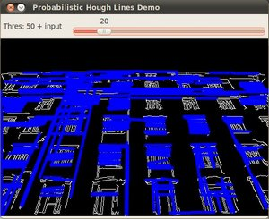

In this tutorial you will learn how to:
Note
The explanation below belongs to the book Learning OpenCV by Bradski and Kaehler.
As you know, a line in the image space can be expressed with two variables. For example:

For Hough Transforms, we will express lines in the Polar system. Hence, a line equation can be written as:
y = \left ( -\dfrac{\cos \theta}{\sin \theta} \right ) x + \left ( \dfrac{r}{\sin \theta} \right )
Arranging the terms: r = x \cos \theta + y \sin \theta
In general for each point (x_{0}, y_{0}), we can define the family of lines that goes through that point as:
r_{\theta} = x_{0} \cdot \cos \theta + y_{0} \cdot \sin \theta
Meaning that each pair (r_{\theta},\theta) represents each line that passes by (x_{0}, y_{0}).
If for a given (x_{0}, y_{0}) we plot the family of lines that goes through it, we get a sinusoid. For instance, for x_{0} = 8 and y_{0} = 6 we get the following plot (in a plane \theta - r):

We consider only points such that r > 0 and 0< \theta < 2 \pi.
We can do the same operation above for all the points in an image. If the curves of two different points intersect in the plane \theta - r, that means that both points belong to a same line. For instance, following with the example above and drawing the plot for two more points: x_{1} = 9, y_{1} = 4 and x_{2} = 12, y_{2} = 3, we get:

The three plots intersect in one single point (0.925, 9.6), these coordinates are the parameters (\theta, r) or the line in which (x_{0}, y_{0}), (x_{1}, y_{1}) and (x_{2}, y_{2}) lay.
What does all the stuff above mean? It means that in general, a line can be detected by finding the number of intersections between curves.The more curves intersecting means that the line represented by that intersection have more points. In general, we can define a threshold of the minimum number of intersections needed to detect a line.
This is what the Hough Line Transform does. It keeps track of the intersection between curves of every point in the image. If the number of intersections is above some threshold, then it declares it as a line with the parameters (\theta, r_{\theta}) of the intersection point.
OpenCV implements two kind of Hough Line Transforms:
- It consists in pretty much what we just explained in the previous section. It gives you as result a vector of couples (\theta, r_{\theta})
- In OpenCV it is implemented with the function HoughLines
- A more efficient implementation of the Hough Line Transform. It gives as output the extremes of the detected lines (x_{0}, y_{0}, x_{1}, y_{1})
- In OpenCV it is implemented with the function HoughLinesP
#include "opencv2/highgui.hpp"
#include "opencv2/imgproc.hpp"
#include <iostream>
using namespace cv;
using namespace std;
void help()
{
cout << "\nThis program demonstrates line finding with the Hough transform.\n"
"Usage:\n"
"./houghlines <image_name>, Default is pic1.jpg\n" << endl;
}
int main(int argc, char** argv)
{
const char* filename = argc >= 2 ? argv[1] : "pic1.jpg";
Mat src = imread(filename, 0);
if(src.empty())
{
help();
cout << "can not open " << filename << endl;
return -1;
}
Mat dst, cdst;
Canny(src, dst, 50, 200, 3);
cvtColor(dst, cdst, COLOR_GRAY2BGR);
#if 0
vector<Vec2f> lines;
HoughLines(dst, lines, 1, CV_PI/180, 100, 0, 0 );
for( size_t i = 0; i < lines.size(); i++ )
{
float rho = lines[i][0], theta = lines[i][1];
Point pt1, pt2;
double a = cos(theta), b = sin(theta);
double x0 = a*rho, y0 = b*rho;
pt1.x = cvRound(x0 + 1000*(-b));
pt1.y = cvRound(y0 + 1000*(a));
pt2.x = cvRound(x0 - 1000*(-b));
pt2.y = cvRound(y0 - 1000*(a));
line( cdst, pt1, pt2, Scalar(0,0,255), 3, LINE_AA);
}
#else
vector<Vec4i> lines;
HoughLinesP(dst, lines, 1, CV_PI/180, 50, 50, 10 );
for( size_t i = 0; i < lines.size(); i++ )
{
Vec4i l = lines[i];
line( cdst, Point(l[0], l[1]), Point(l[2], l[3]), Scalar(0,0,255), 3, CV_AA);
}
#endif
imshow("source", src);
imshow("detected lines", cdst);
waitKey();
return 0;
}
Load an image
Mat src = imread(filename, 0);
if(src.empty())
{
help();
cout << "can not open " << filename << endl;
return -1;
}
Detect the edges of the image by using a Canny detector
Canny(src, dst, 50, 200, 3);
Now we will apply the Hough Line Transform. We will explain how to use both OpenCV functions available for this purpose:
Standard Hough Line Transform
First, you apply the Transform:
vector<Vec2f> lines;
HoughLines(dst, lines, 1, CV_PI/180, 100, 0, 0 );
with the following arguments:
And then you display the result by drawing the lines.
for( size_t i = 0; i < lines.size(); i++ )
{
float rho = lines[i][0], theta = lines[i][1];
Point pt1, pt2;
double a = cos(theta), b = sin(theta);
double x0 = a*rho, y0 = b*rho;
pt1.x = cvRound(x0 + 1000*(-b));
pt1.y = cvRound(y0 + 1000*(a));
pt2.x = cvRound(x0 - 1000*(-b));
pt2.y = cvRound(y0 - 1000*(a));
line( cdst, pt1, pt2, Scalar(0,0,255), 3, LINE_AA);
}
Probabilistic Hough Line Transform
First you apply the transform:
vector<Vec4i> lines;
HoughLinesP(dst, lines, 1, CV_PI/180, 50, 50, 10 );
with the arguments:
And then you display the result by drawing the lines.
for( size_t i = 0; i < lines.size(); i++ )
{
Vec4i l = lines[i];
line( cdst, Point(l[0], l[1]), Point(l[2], l[3]), Scalar(0,0,255), 3, LINE_AA);
}
Display the original image and the detected lines:
imshow("source", src);
imshow("detected lines", cdst);
Wait until the user exits the program
waitKey();
Note
The results below are obtained using the slightly fancier version we mentioned in the Code section. It still implements the same stuff as above, only adding the Trackbar for the Threshold.
Using an input image such as:

We get the following result by using the Probabilistic Hough Line Transform:
You may observe that the number of lines detected vary while you change the threshold. The explanation is sort of evident: If you establish a higher threshold, fewer lines will be detected (since you will need more points to declare a line detected).